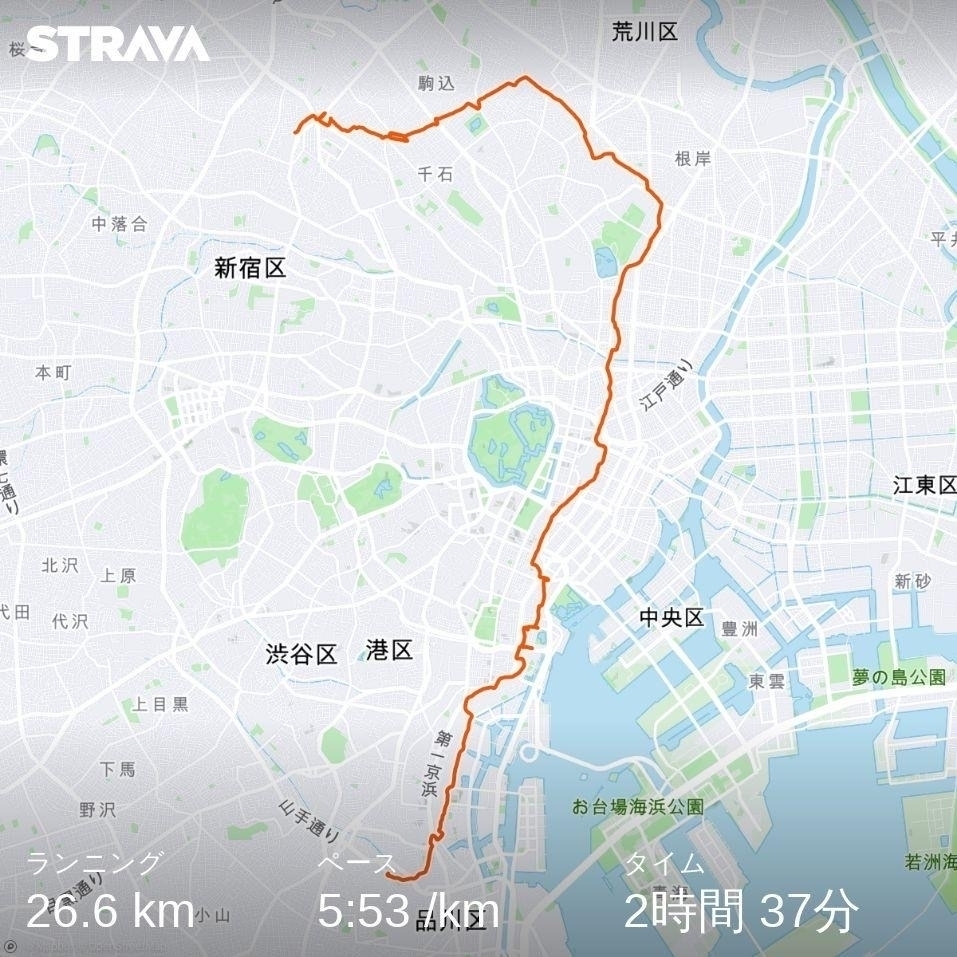

自分の人生の課題は理想を持ちつつも物差しにして批判したり絶望することをやめて現在が常に完璧であることを受け入れるということのようだ。うん順調にそっちに向かってる感じはする。今は常に完全であり今を味わい瞬間瞬間を重ねていく。
昨日はAgile459の運営ミーティング。来年は四国らしいこと、面白いことやろうねという話をした。まずは沢マンとアジャイルの話をどこかでしようかなー。見学会もできたらいいなぁ(コロナと住民の方次第ですが)。
DXの本いくつか読んだけどUXの話はすこし出てくるのだけど、実現すべき価値（バリュー）の話が出てないのは気のせい？何を実現するかの話がおいていかれてる印象あるけど、バリューの話はもう大前提ということなのだろうか？
次男が「犬は口開けてハァハァするね」と言ったので「それは汗腺が発達してなくて口開けて放熱し体温を下げてるんだよ。人間は汗腺が発達しているので汗出して体温を下げることが出来る。人が動物の中で一番長く走り続けられる理由なんだよ」と説明したら「なるほど！そうなのか」と納得してた。
うちの父親が写真をiPhoneに送るのにカメラ→PC→Google Photo/iCloud→iPhoneと面倒なのでそういえばEye-fiってあったなぁと調べたらもうオワコンなのか。カメラのWifi機能使うのが今は主流なのかな？メーカーによってクオリティ変わるのが難だなぁ。
途中休憩やエイドがないと継続できない。 “短距離走のキツさを、長距離走で続けている感覚です。ゴールのない、長距離走。立ち止まってもいいですか？” qr.ae/pNcgPm
沢田マンションの記事なかなかよいね。bunshun.jp/articles/…
問題はscrapboxのslugの命名規則が英語圏前提で変なものになってしまうことくらいか（文中のアルファベットだけを抜き出してURLにしてしまうのでとても変）。issueは上げてるけどいつか対応してくれるのだろうか？
呟きをmicro.blog(->Twitter)とscrapboxにポストして後でscrapbox上でCreate Pageして切り出したりタグ付けたりして整理していくやり方は、思ったよりもしっくりきていてよいなぁ。発散と収束がやりやすい。ここから記事ネタも拾える。
昨日グラベルロードを店に見に行ったらフレームのごつさに驚いた。アルミのせいというのもあるけどクロモリロードの細身と比べると雲泥の差だなぁ。昔もってたMTBと比べてもごつい。高いとカーボン使ってフレームはスッキリするのだろうか。とりあえずゴツくても最初はアルミでいくかね。
昨日雪が少し積もってる山を走ってきたけど、雪を踏みしめる足音が気持ちよかった。立ち止まると音がしない静寂の世界。こんどはゆっくり雪山ハイクしたいなぁ。でも歩くと寒そうなので、走って歩いての繰り返しが良さそうだな。
数秘術の33について調べたら「宇宙愛」「世界平和」「生きづらい」「破壊と創造」「価値観からの解放」「奉仕」「お金に無頓着」「自由人」「周囲に理解されない」とか色々書かれていて当てはまるのでワロタ。士動物占いも孤高の狼だったし、まぁ運命受け入れてます。「でも、やるんだよ！」
美容院に行く途中に久しぶりに見た綺麗な虹🌈。車運転してたから写真撮れなかったけどその後カットしてもらってる時に美容師さんに数秘術の話されて生年月日で見てもらったら運命数が33の特別なレインボーの数だって。何かいいことありそう！？
『オーパ！』の完全復刻版が1月に出るらしい！8800円！これは予約だな。amzn.to/3gZ3jop
巨大温室作って池を掘ってアマゾンの生態系の中で暮らしながら生き物観察したかった自分としてはピラルクーとドラードが泳いでる水槽は子供の頃の夢。『オーパ！』とか『ナマズ捕りに学べ』をバイブルとして育った世代なので、あつ森作った人もそういう世代なのかと勘ぐってしまう。
娘が受験ひとまず一段落したので我が家で「あつ森」が解禁された。ピラルクー釣った、チョウザメ釣ったという話があちこちで聞こえる。水槽で泳いでる姿はリアルだったな。釣り・熱帯魚にドハマリした少年時代を過ごしたのでビジュアルを見せてもらって魚名をぱっと答えたら驚いてた。（学名は無理）
相手に一方的に話をすると、相手の理解の確認もなきまま進んでしまい、相手の理解のコップがすぐに溢れてこぼれ落ちてしまう。結局少しづつ確認をしながらぽつりぽつり話をするしかない。話す方はスッキリするのでそれが目的ならいいのだけど。焦るといいことない。
Scrapboxにwebmentionが欲しいと書いたが設計思想に反するらしい。個人的には scrapbox.ioを越えたbacklinkのイメージなんだが合わんのかなぁ。scrapbox.io/shokai/承認欲求の刺激につながる機能を全て排除する
アレグザンダーの全体性の話は、部分ー全体の関係とは別に、形としての全体ー部分・センター・15のプロパティの話が出てきて混乱するのだろう。まずは部分ー全体の関係性（形はおいておく）についての理解を得て、次に形の問題に目を向けるといいと思う。
昔のブログを見てみたが走り初めて３年で体重が安定し以降は落ち着いてるということに気がついた。朝フルーツ＆シリアル以外は食事制限かけてない。giantech.jp/2015/08/1…
松山から内子に引っ越した友人に限界集落の地元を人生かけて活性化させようとしている人がいる。周囲は助けてくれ人も少なく何年も一人で奮闘しているのを見てきた。なかなか自分も手伝えずこの数年いる。せめていろいろな人を繋げて弾みのきっかけになるといいなぁ。
WebmentionやMicropubに対応するWikiがほしい。Scrapbox対応してくれないだろうか？FedWikiにそういうプラグインつくってみようかな。。。その前にFedWikiちゃんと使わないといけないけど。 #indieweb
体内の細菌や臓器が全体の調和を乱すように振る舞うことで自分の体調が変化し疾病を引き起こすように、人が自然の調和を乱すように振る舞うことでより大きな全体のバランスが崩れて異変が起きることは自明だ。有機体としてみた時に、人は地球であり、地球は人である。
体内の細菌も含めた有機体の全体としての自分、組織という有機体の一員としての自分、そして地球という有機体の一部としての自分。自分という存在は有機体の部分であり全体であり、どれ一つとして独立して存在し得ないということに気づくことで人はどのように変われるのだろうか？
ワクワクすることをしようの原典はバシャールなのかもっと前からあるのか？本質的には変わってないが伝える人が変わって受け継がれてるイメージ。イキイキすることをしようというのはないのかな？どちらかというとプロセスか結果状態だからかな。
32インチ4Kディスプレイが1080pしか認識されなくなる現象はどうやらちゃぶ台でモバイルディスプレイを繋げたあとに生じる現象であると気づいた。確証はないけどちゃぶ台でデュアルディスプレイしてて、スタンディングに移動して32インチに繋げると1080pしか認識しなくなるっぽい。
最近は「XXX大全」というのが流行ってるのかー、というのをAmazonの書影を見てて感じた。「大全」っていうのはいいんだけど結局できることはひとつずつなんだけどそのあたりみなどうしてるのかね？とりあえず辞書的に買っておくのかな。
夕方河川敷走ってきたけど寒かったなぁ。久しぶりの肌がピリピリする感覚。今週末の山遊びはどうなるんじゃろか。。。BUFFを口元につけててもぶら下がってくるので新しいの買ったほうがいいかな？（うちのBUFFは全部レースの参加賞）
いろいろデスク周りの什器買うのもいいけど、やっぱり自分で自作したほうがしっくりくるのが手に入るよなぁ。製品を参考にして自作していくのが良さそうだ。時間がかかるのが難点だが、それも含めて楽しむことでより最適な環境になっていくんだろう。まずはスタンディングデスク下の棚でも作ろう。
iPad Pro + Keyboardは悪くないんだけど結局できないことも多かったりブラウザの挙動が異なるので結局Macに頼らざるを得ないことがある。軽くて手書きができてキーボードで打ててSIMがさせて速いMacbookが欲しくなる。「それSurface Pro」とか言われそう。
ちゃんと100km走ってみたのは偉い。走り方を学べば100kmはサンダルでも走れるんやで。 news.yahoo.co.jp/articles/…
MBP16をBig Sur 11.1 にしたらつなげてる4Kディスプレイが 1080pにしか認識されなくなってしまった。たまに治るけどたまにおかしくなる。条件がよくわからない…つなぎ直して治らない時どうすればよいのか？ 字がでかくて見やすいが32inchなのでもう少し小さく…
言葉だけではなく態度で示すということは、その人が信頼足る人物かを示す大きな指標である。ここで「料亭から料理を宅配してもらってリモートで会食」となってればまったく印象が違うと思う。t.co/BsdhmksO9…
Drafts はスクリプト使うことでブログもツイートもScrapboxも全部ここから投稿できるので色々捗る。またMacもiPhone/iPadも同じ設定・スクリプトが同期されるので個別で管理しなくていいのが嬉しい。
モチベーションが上がらないのを無理やり上げようとしてもエネルギーロスではないかと思っている。低空飛行なりの過ごし方を考えるのがいい気がしている。ある程度は試行錯誤してもいいけど「モチベーションをあげなければならない」という無限地獄に陥らないようにしないと。内なる声を聞こう。
問題を解決しようとするのではなく問題と認知する枠組みを変える。仏教において苦しみの根源を苦痛ではなく一時的な感情の追求そのものに目を向けたことに等しい。感情に一喜一憂するのではなく味わって受け入れる。問題も解決するものではなく味わうものとして受け入れるとどう変わるか？
なぜ大事？ ＳＤＨ（健康の社会的決定要因）の視点 千葉大学教授・近藤克則さんに聞く – 全日本民医連
もうひとつは、「ハイリスクアプローチの限界」です。健診などで高リスクの人を拾いあげても、その行動を変えることは難しいと分かりました。「病気になっていない人たちへの健康指導は効果がない」というエビデンスも出ました。
ハイリスクだけは人は動かない。
セシリアの冷蔵庫片付けはルールではなくパターン（エッジ効果）でできてる。美しい冷蔵庫とはこれ！！ Permaculture’s ‘Edge Effect’ for a Decluttered, Delightful Fridge
をNotionの記事が！と思ったら、@0310lanさんの記事だったw bit.ly/3oTi9iH
表現することと行動することは等しい。行動が表現であり、表現が行動であり、生き様こそがその人の表現であるとするなら、生きてきた軌跡の結果であるその人こそがまさに表現なんだろうね。悩み苦しみもがき足掻いてきたプロセスの積層こそがその人の表現（＝アート）なのかもしれない。
多くの問題は人が感情・感覚を抑圧したりして使い方を忘れてしまったからではないかと感じる。技術に依存し感情・感覚という自身の測量機械を使わなくなったせいとも言える。感性と論理の両刀遣い、どちらかではなく両方を50:50で使うように訓練する必要があるのだろうなぁ。
結局の所、自分がずーっと興味をもってきたのは「いのちをどうやって育むか」「いきいきとさせるか」というところに帰結しているということに気づいた。生き物、ソフトウェア、チーム、環境、自分自身、社会、子供、etc… 最終的にその向かう方向はどれも同じだなぁ。
「改善しないといけない」というのも「ありのまま」を見れていないことで「何かが欠損している」という評価判断していることになるのかな。「このままではいけない」と感じるのを「そうなんだね」とみていることができれば「ありのまま」だけど「なにかしなくては」となるとそうではない。
外部環境に合わせるだけでは環境適応とは真の意味ではいえず外部環境に合わせる前に自身のいのちに目を向けなければならないのではないか。つまり内へと目を向けろということ。内面を見ないまま外界ばかり目を向けていても本当の意味で「生き切っている」ことにはならないのではないか。
どうやら論理データではなく物理データが我が家に届いたそうなので長女の受験は一段落したみたい。自己隔離してまで東京に行った甲斐があった。これで年末年始はのんびり迎えることが出来る。後は自分の仕事くらいだ（！？）
鍼灸の先生に左の臀部が毎回張るとの指摘があって何故だろうと思ってたが、今日階段ダッシュやってる時に登りの蹴り脚が左に偏っていることに気がついた。試しに右脚を蹴り脚にしてみたが違和感があるのでやはり無意識に左脚で蹴り込んで登っていたみたい。気づけてよかった。
DIY工房が松山にできたのかー（森松だけど）今度走って見に行こうかな？ matsuyama.keizai.biz/headline/…
Micro.blogでつぶやいたことをScrapboxでまとめて説明するページを作ってみた。Scrapboxで解説や関連つけるのはよい。もっと書きたくなればブログにするという運用でしばらくやってみる。scrapbox.io/tkskkd-wo…
何かを自分で体験するよりも体験したことを他人に伝えるほうが難しい。自分が学ぶよりも他人に学んだことを伝えるのほうが難しい。時間をかけて体験し身体に刻み学んだものほど他人に伝えるのが難しい。結局は体験や学びを伝えようとするのではなく他人が体験したい学びたいと思わせることが一番の近道
BORN TO RUNにも書いてあったが女性の方が苦痛に強く身体のフィードバックを適切に処理できる気がしていて納得感ある。知り合いに自分よりも速いお姉様いるしレースで抜かれることなんてざらだし性別年齢無関係 melos.media/training/…
いくら情報を与えても飛び込まない人もいる。そんな時はこっちがまず一人で飛び込んで「大丈夫だよ、安全だよ、楽しいよ」と言って誘う。結局情報や言葉を与えても飛び込まない人には、誰かが先に行動で示して感じてもらおう。
誰もが皆不確実な未来に向かって飛び込めるわけではない。自分はすぐ飛び込めても他の人も同じように飛び込めるとは限らない。その時にどうするか？イライラするのでなく安心して飛び込めるための情報を与えてあげよう。水温、深さ、高さ、流れの速さ、など。Ready to startを満たそう。
小学校のおやじの会の定例も久しぶりにフルリモートで実施。YouTubeライブで聞き専にも対応してリアルタイム視聴できない人も後で見れるのは公民館で実施するよりもいい。公民館定例でもZoom参加可能にしてるけどフルリモートの方が楽だなぁ。議事も同時に残しているので大変だけど。
自分はこれぞと思ったものについて一人でどんどん学んでいってふと気づくとそのことについて話せる人が周囲にいなくて孤独を感じるというのを繰り返している気がする。一つの専門領域ならそのコミュニティに入ればいいのだろうけど領域横断で同じ深さで話せる仲間が欲しいのかもしれない。
現代人は「塩中毒」!? 人間が塩のとりこになる驚きの理由 | NスペPlus
ところが今回、人類の進化から“人間が生きていく上で必要な塩の量”を探ると、これらの目標値でさえ“塩分とりすぎ”かもしれないということが明らかになってきたのだ。
tkskkd.com の使ってるテーマがいまいちなので、もうすこしメリハリつくように変えたいのだけど時間がとれない。あり物のCMSのテーマ（WPなどではない）をカスタマイズして見栄えよくしてくれる人とかいるのかな？（もちろんお仕事）自分でできなくもないが時間が…
1を聞いて10を知るというのは言葉の裏にある意味を背景情報とともに読み解く・掴むというスキルだとすると受け手の能力に依存する。詩や俳句、絵画なども見えるものや言葉に現れない隠されたものを伝えようとする時には送り手の受け手のスキルと受け手のスキルの相互作用によって結果が決まるのか？
Agile459の10周年イベントから見えたのは「誰でもどこからでもアジリティを高めることは出来る」ということだった。 #agile459 #agile459_10th_anniversary
伝える側はその時々の状況に経験を更新しておかないと智慧は錆びていく。ただし時代や状況が変わっても不変なものがあり人はそれを「本質」と呼ぶ。ただ「本質である」と断定することはその時は誰にも出来ず結果として「本質であった」と後の世代が気づく。自身の経験だけで「本質」を語るのは傲慢。
誰かが経験して身体に刻み込まれた智慧を次世代に伝えるために言葉という手段を選ぶ。言葉からはどうしても多くのものがこぼれ落ちてしまう。ではどう伝えるか？ 世界中の人びとがやっているのがまさにこれなんだよなぁ。単に伝えるだけでなく次世代の環境に適合する形の抽象化あるいは具体化と共に。
iPad同士でZoomで繋げながら夕飯を家族で食べるバーチャル団らんを実施してみたがかなり面白い。iPadのインカメラのクオリティに依存するが、これで拠点が別れてても楽しい食事ができる。しばらく自己隔離状態なのでこれで楽しもう。
一日荷物を背負って歩いていたら妙に疲れた。これが在宅作業の弊害かもしれない。やはり何かを得ると何かを失う。リモートワークはベストではなく単なるその場凌ぎ、通過点に過ぎない。思考停止してはならない。次なるボトルネックを取り除くために考えよう。
朝思い立って池袋から14:00にスタート。道に迷いながらも無補給無給水で時計回りで大崎まで走る。日没を過ぎ風も冷たくなってきてライトも無く夕飯の時間も考え中断。正直飽きてきたというのもある。ダメージはなくルナサンだったが快適だった。次やるなら朝から始めよう。東京は人が多いね。

突然、山手線一周というアイデアを思いついてしまった。距離は約40kmで標高差ないしコンビニいっぱいあるから荷物も持たなくていい。道に迷わなければキロ6分で走れば4時間強、途中休憩とか写真撮ったりすることを考えても5時間あれば回れるかな？池袋スタートでぐるっと時計回り。

AgileJapanでAgile459の10年のあれこれ(主に危機にフォーカスして)を話してきました。
www.tkskkd.com/2020/talk… #agilejapan #agile459
両親のらくらくスマホをiPhoneSE2に機種変して諸々設定をとりあえず終えた。文字を拡大して視覚的にはOKだが操作系が異なるのはさすがに慣れが必要。80歳手前に変化を強いるのは気が引けるがspotifyで坂本冬美とか藤あやことか聞けるようにしたら喜んでくれたのでよかった。
領域としても規模としても広がるアジャイルユニバースに対して、中心にあるのは「良い仕事をしたいと真摯に願い行動するソフトウェア技術者のチーム」であると、アジャイルソフトウェア開発の出自に目を向けろと訴えたのが『Clean Agile』なのだと理解している。#agile世代ギャップ
ソフトウェア開発者がコードを書ことから始まり要求、設計、テスト、マネジメントといった従来個別進化して分かれていた領域を統合させていった。個人からチームへ、更には作り手視点だけでなくデザイン、顧客、ビジネスへ統合領域を広げてきた。#agile世代ギャップ
形を変えてアジャイルと呼ばれたものは存在し続け、より具体的な技術やコンセプトは個別に進化していくのだろう。しかしアジャイルという総体で表現しようとしてきたものの全体性が失われることは避けたいなと考えている。#agile世代ギャップ
昨日アジャイルという言葉が古臭く感じる、抽象的でわかりづらい、というフィードバックをもらって大変気づきがあった。アジャイルが当たり前の世代が増えることはまさに僕らが望んでいた世界であるとともに「なぜ」という文脈が失われて形骸化する始まりである。#agile世代ギャップ
たしかに最悪だ。 “シャーデンフロイデとは誹謗中傷など人を叩いて得る快感、ザマミロ、メシウマ等で得る快感です。最悪である理由は言わずもがな、本人無傷で他者の人生が終わっちゃう可能性があるからです。 ” 「これにハマったら人生終わるぞ。」というものは何ですか？ - Quora
人は生まれた時は自己と世界は一体であり不可分だが、成長するにつれ徐々に世界と自身を分離させ更には世界のあらゆるものを分断化させていく。年老いていくと徐々に世界の境界が曖昧になっていき最後はまた死んで一体化する。人が世界を分断化する認知を獲得していく意味はなんなのだろう？
最終的には頑張らなくていい状況を作るのが目的なのだが、常に小さく手入れをし続けることでその目的に到達する。常に小さな手入れをし続けるためには頑張らずにやり続けられるようにするのが必要。ということで常に頑張らないようにするのが肝要。
ラン5km＝自転車50kmの感覚という対応を聞いたら、四国一周1000kmはランで100km感覚なのでまぁ通しでもいける気がしてきたぞ。通しで走り遍路するのに比べれば全然楽そう。その前に区切りうちで走り遍路、その前に四国のみちを走らねばだが。。。
ここの所あまり懸垂を始めとする自重トレしてないから筋力が衰えてしまった。またやり直しだなぁ。自宅よりもやっぱり公園トレの方が自分的にはいいなぁ。懸垂台探してまた公園巡りしようかな。#strengthtraining
#Agile459 10周年イベントの動画配信の出来が良すぎてびっくりしていた。@fku_mnk デザインお見事！ お祝いメッセも含まれているので当日参加できなかった人は是非みてください。
感情についてはアレグザンダーのフィーリングに始まり、NVC、『デカルトの誤り』からたどる脳科学、心理学、武術の身体観、スピリチュアルにおける捉え方、由佐さんの『メンタルモデル』、あとは自身の体験に基づいているのですが、だんだん収斂してきた感はあります（が、気のせいかも）
Agile459 10周年 イベントオープニング＆クロージングトーク。平鍋さんのクイズ動画、衝撃の事実2つ、テーマ「内→外」解説、四国の「いきいき」など。#agile459
SDGsは「大衆のアヘン」。資本主義に緊急ブレーキを！（斎藤 幸平） | 現代新書 | 講談社（1/4）
ところが、いまの経済が力を注ぐのは、ちょっとした品質の違いを広告やマーケティングでことさら強調して、顧客の購買意欲を刺激することですよね。
むかーし、@amapyon と「いつもあそこから」というデュオでLTをたまにやっていたのだけど、プラダンでサイコロつくってそこの面にネタ書いてひっくり返しながらLTをした時の動画ないかなと探してみたが、流石にないみたいだなぁ。スマホ時代なら残っていただろうに残念。
ちょっ、@htkymtks の Eraser Guiterの動画、14年前にネタでアップしたのに、なぜか1000回以上ビューがあって英語でコメントもついてて驚いた！
サーバントワークスの長沢さん(@tnagasawa)から10周年のメッセージを頂き当時の思い出を語りました。ありがとうございます！タコ殴り写真なぜ撮ったのか経緯忘れました😅 ちなみに「東京換算でXX人」は @tsururに教えてもらいました。 #agile459
男たちが抱える｢弱音を吐けない｣という重い病 | 生きづらい男たちへ捧ぐ 田中俊之の男性学 | 東洋経済オンライン | 経済ニュースの新基準
僕は自分の感情を聞いてあげるのが大事だと思ってるがそれすらもできない状況もあるのか。JTSはそこに道を作ってくれると思う。
Agile459 10周年にストアカ(@StreetAcademy1)の森田さん(@emeitch)からメッセージを頂きました！ 最初のサテライトに来て頂きました。ありがとうございます！！ #agile459 #agile459_10th_anniversary
久しぶりに読み返したMatzの建設的コミュニティについての話が心に刺さる。スクラムガイドもこういう感じでやってるのだろうなとふと思った。www.publickey1.jp/blog/19/r…
developの訳語に「開発」はいまいちだなー。「発達」は自動詞で使いづらいねーという話をしてたら「展開」という意味があるらしいと聞いて辞書で語源みてみたらなんとunfoldだって！ 「展開するんだ！開発するんじゃないよ」と一部のマニアにしか通じない発見でテンションあがった。
こんなにスクラムガイドの改訂に皆興味があるんだということに驚いた。どういう観点で興味もってるのかな？経典として？気になる所がどうなったか知りたい？僕はスクラムの信者でもエバンジェリストでも反対派でもないけどシンプルに保ち続けようとする活動は尊敬する。普通肥大化していくからね。
スクラムガイド改訂について追加。Self-managementの表記についてはティール組織の影響が大きいのではないかと推測しているのだがどうだろうか？IT用語をなくしてより汎用的な組織フレームワークへ向かう方向性だろうか。#scrumguide2020
スクラムガイドが改定されたそうだ。これまでのスクラムガイドで最も納得いかなかった「開発チーム」という表現が「開発者」になっていたのがよかった。自分が説明するときはいつも「開発チームじゃないよ開発者だよ」って注釈をつけていたから。開発者とPOが分断されてはいけない。#scrumguide2020
“名前をつけることによって神秘さは失せる。そして多くの場合、人々は名前を突き止めることで、それがどんなものかを知ったつもりになってしまう。名前をつけたら行き止まりになり、命名した人はそれ以上学ぶものはないと思い違いをするのだ。”
コンクリート護岸と鰻減少の因果関係はいかに？思いがけない連鎖があるのが自然。
ウナギの主食、雨の日に出てくるミミズ…エサの６８～９３％ : 科学・ＩＴ : ニュース : 読売新聞オンライン
同じ川でも、コンクリートで護岸整備されている場所のウナギの胃からはミミズが見つからず、チームは「コンクリート護岸がウナギにとって重要なエサの供給を阻んでいる可能性がある」と指摘している。
養老孟司氏、「将来の夢はYouTuber」の子供達に伝えたいこと
今回のコロナは、人間には自然をコントロールすることはできない、という教訓でもある。思い通りにいかないことがあったとき、人間は「努力・辛抱・根性」の方法を学びます。
from 傲慢 to 謙虚
言い方を変えれば、人間は、自分の体すら意識でコントロールできない、ということです。それなのに、すべてをコントロールできると自惚れているから、地球温暖化や公害問題も起きてくる。
そうか、物語はツリー構造（伏線わかれてそのまま回収できず）ではなくセミラティス構造（伏線をちゃんと回収してかつ様々なところに結びついている） になることで面白くなるのかもしれない。結局「つながり」が面白さ・感情を喚起させるのだろうか？物語の構造を図式化したら面白そうだ。
変わる人、変わらない人、両者が出会った時にどのような態度をとればいいのかについては、一万年の旅路にだいたい書いてあるので読むといいと思う。 #agilejapan
ソフトウェアエンジニアがアジャイルの普及でより注目されるのはこれまでのバランスを考えるといいことなのかも知れないけど、エンジニアが「世界を作れるのは俺たち」と傲慢になるのは避けたほうがいいのではないだろうか。
その昔、@m_seki から「予測できる変化は変化ではない」と教わったのでコロナは確かに予測できない変化なんだけど、変化の仕方で右往左往なのか仮説検証の繰り返しの違いがありそう。
2010年付近のtweetを眺めていたがバンバン出張に行ってその途中で色んな人とTwitter上で積極的に話してたんだなぁというのがよくわかった。Facebook以前はこんな感じだったのかもしれない。これからはIndieWeb上でみんなとやりとりしたいなぁ。 #indieweb
#Agile459 の名付け親は @kawagutiだったという記憶から事実をやっと突き止めた。 twitter.com/kawaguti/…
Agile459 10周年に祝動画をくれた荻野さん(@ogin_s47)さんとの思い出を語ります
荻野さんは（一部で）伝説のコミュニティ「ゆるふわ.rb」の主催者です。 #agile459 #agile459_10th_anniversary
Rubyビジネスモデル実証事業の報告書のうちテクノプロジェクトさんの分はここからみれます。www.tpj.co.jp/ruby/case… #agilejapan
#AgileJapan の「地方コミュニティジャーニー」でお話した Agile459の10周年イベントの申込みはこちらです。 一緒に楽しみましょう！！ agile459.connpass.com/event/189… #agile459
確かにEventHub良く出来てるな。イメージはTV視聴＋インタラクティブというかんじか。リアルイベントみたいに横のつながりをデザインする何かがあると更にいいのかなー。Agile459の10周年でいろいろ実験しようっと。 #agile459
AgileJapan2020 地方コミュニティジャーニー 登壇資料アップしました。これをきっかけに地方コミュニティ交流祭りみたいのできるといいね。www2.slideshare.net/kkd/10-23… #agile459 #agilejapan
AgileJapan2020 登壇前日の気分を語る
明日はAgileJapan2020に登壇します。20分に10年をまとめるのは想像以上に大変でしたがなんとかなりそうです。明日はよろしくお願いします！！2020.agilejapan.jp/session.h…
イキカタ部 @nogupanさんと里山から夕暮れを見ながら雑談する。
技術評論社の野口さんと久米の里山の展望台から松山の夕暮れを眺めながらダラダラ話してた。2人の雑談はイキカタ部としてyoutubeで配信中！イキイキとした生き方を考えて実践する部活。
Agile JapanやAgile459 10周年イベントで高知や徳島の人に届いてAgile459一緒にやってもいいよーという人が出てくるといいな。今ならリモートで一緒にできるしそのうち互いに遊びに行くこともできるようになるかもしれない。徳島の大菩薩峠みなで行ってみたい。
「少人数学級を」署名１８万人超集め大学教授ら会見 コロナ再拡大「今しかない」：東京新聞 TOKYO Web
１クラス４０人では「３密」になることなどから、清水睦美・日本女子大教授は「今しかない」と少人数学級の必要性を訴えた。
和田さん(@t_wada)から祝メッセージを頂きました。ありがとうございました！！ 和田さんと #Agile459 の思い出を語りました。 Agile459 10周年メッセージを頂いた和田さんとAgile459の思い出を語る #agile459_10th_anniversary
そうだったんだ、知らなかった。。。。
神戸新聞NEXT｜三田｜脱線事故で亡くなったＯＢ追悼 三田学園・吹奏楽部顧問
翌年、石井さんの同級生が吹奏楽部の練習室に近い中庭に顕彰碑を建てた。遺族は石井さんが愛用していたピアノを寄贈し、部員が練習で使っている。
全部が全部自分でやるのはさすがにしんどいのでうまく外部サービス使いながら自分のコントロール範囲を増やしていくのがいいのだろうなぁ。べったり依存するのではない自立する個を支えるアーキテクトビルダーみたいな優しい眼差しのサービスが増えるといいのだな。
共有サーバーを引っ越しするのでデータを整理しているが昔のTracベースでやってたブログ（生きてま）のデータが残っていた。Trac.0.10から0.11に引っ越そうとしたがTracBlogプラグインが対応してなくて挫折したのだった。痕跡から当時の感情を読み解く一人考古学。
昨日は久しぶりに客先に行ったり、空港に行ったり、急遽訪松してくれた友人と会ったり、娘の面談相談したりでバタバタしていた。普段が自宅周辺とジュンク堂と習い事送迎しかしないので、いろいろ変化に気づけた。空港の売店閉店はショックだったなぁ。
娘の推薦試験の面談の相談をしていた。推薦理由の添削アドバイスだと将来の夢から逆算して必要な学びたいことと学部学校を選択した理由を述べろと書かれている。すべてが夢から逆算して考えろというのは大人がいいそうなことであるが押し付けられたほうは辛い。これをドリームハラスメントと呼ぶ。
せっかく140文字に収めたはずなのにTwitterにPOSSEされないのは悲しいですなぁ。文字数の計算が間違ってるのかな？まぁ大した内容ではないのでいいけど。#indieweb #micro.blog
フリートとかやめて、みんなでIndieWebしようぜ！というのは簡単だがまず簡単にMicroblogできる日本語環境を作らないとダメだよなぁ。Microblog Farmみたいなのがあればいいのか、Micro.blogのようにデータのコントロールを利用者に委ねたプラットフォームがあればいいのか、どうなんだろうねぇ。。
この10年をふりかえる。仕事、家庭、趣味、コミュニティ、社会情勢、全てが密接に関係していて分けて考えれない、不可分。その時々は未熟ではありながらもできることを精一杯やっていたことを受け入れる。過去を自己否定せず未来を見つめる。全体が調和し生き生きしていることを目指す。
Apple M1のMBP/MBA惹かれるが出張に行かない今では事務所でなく自宅作業のためだけに買うのは微妙。自宅のMBP13/2017を買い換えるという需要はないわけではないが、事務所のMBP16がスタンディングデスク専用になってしまったからちゃぶ台用？なら自作PCの方がよい？
今年買ってよかったと思うもの「Shiftcam」
今年の買い物で一番自分を豊かにしてくれたものを紹介します。スマホケース+レンズのシフトカムです。こいつのおかげでマクロ写真に目覚めてしまいました！📷🐞 大きなカメラやレンズがなくても結構綺麗なマクロが撮れて感動したという話です。
もしChomeベースのブラウザでこんなメッセージが出てScrapboxが表示されない場合はまずChromeプラグインを疑おう。ひとつひとつON/OFFして切り分けをしよう。 twitter.com/kkd/statu…
Micropub Rocks! is a validator to help you test your Micropub implementation. Several kinds of tests are available on the site.
「メンバーが楽しんでいる姿を見て感動した」 「メンバーの意外な一面を見ることができた」 という声もあり、リアルな運動会と同じように、その価値があることがわかりました。
これをビジネスにするとは…やるなぁ。
今朝ミであすけんが話題に。一時期あすけん駆動食生活になっていたのを思い出す。今はやってないが一度やってみると色々勉強になるね。ハイスコア重視、バランス重視、カロリー重視、食と運動重視。特にケーキの罪深さとかよくわかるね(脂肪・飽和脂肪酸ふりきる) #karadadev 🍰
これまでAgile459に関わってくれて10周年への祝動画やメッセージをくれた方に、もれなく「XXXさんとAgile459の思い出を語る」という記事を書くキャンペーン（？）を実施しています。お気軽にどうぞ！！😇 #agile459
iPadProのJunoでAzure Notebookが終了予定になっていて愕然としたがColaboratoryが普通にブラウザ上で問題なく動くようになったのに気付いて「まぁ、これでいいや」感がしたのであった。Driveからipynb開けないがcolabからならipynb開ける
ウッドストーブを自作しよう！おすすめの作り方や仕組みまでをご紹介！ | 暮らし〜の
自作のウッドストーブは比較的に安価で作ることができる仕組みをしているのでおすすめです。
そういえば作ろうとしていて忙しさにかまけて忘れてた。タンドリー窯とウッドストーブは自作してみてワークショップもやってみたいなぁ。 🔥 #DIY
複雑になってしまうわけはなんだろう？
シンプルなものがどんどん複雑になっていく。色々なものが年月を経て多くの人が関わっていくうちに、あれやこれやの定義だったりケース毎の具体例がまとわりついてきて本当に大事なところ・本質的な所が隠れてしまい複雑になっていくのだろう。エントロピーがどんどん増えていく。物事は本質的にシンプルであってそのシンプルさを保ち続けることこそが本当の意味での改善だったり維持ではないだろうか。
具体例やバリエーションが増えると一見派手に見えるが余計なものがまとわりついているだけ。本質からどんどん遠ざかっていく。📝
人間の体温が低下しているわけはなんだろう？
20世紀は37℃だった人類の平均体温が低下しているらしい「筋肉量の低下・細菌との戦いが減ったから？」 - Togetter
人類の平均体温の低下 news.ucsb.edu/2020/020081/dr… 20世紀の頃は37℃が平均とされていたのが最近は36.5℃とされていて、実際に広範囲な調査しても年々下がり続けているという話。 衛生状態改善(感染症と戦うための身体の活動が減った)とか冷暖房普及とか諸説あるけど原因謎
身体活動もそうだし特に冷暖房の発達で体温調節を人間自身がコントロールしなくても良くなったからだと思っていた。一昨年から冷水シャワーを浴びるようにしたら寒さに少しは強くなった気がする（寒いけど）
靴を履かなければ足の裏が発達し、服を着なければ恒常性の結果体温を保つために上げようとする。
体温というと、ヤーガン族がぱっと頭に浮かぶ。彼らは10度を下回る気候の中で服を着なかった。服の代わりに脂を塗っていた。おそらく体温も高かったのではないだろうか？
「使えば発達し、使わなければ退化する」つまり「環境がよくなる」と「人は弱くなる」のではないか。
Agile459 10周年の祝動画を頂いた安井さん（@yattom）とAgile459の思い出を語ってみた
Agile459 10周年の祝動画を頂いた安井さん（@yattom)とAgile459の思い出を語ってみる。
安井さんは前職の元同僚だった。もっと前だとXPJUGのスタッフをやってる頃からの付き合いだからだいぶ長い。Agile2008に一緒に行って登壇した仲間でもある。（この辺りは書き出すと長くなるのでやめておくことにする。）
初めてAgile459に来てもらったのは2017年のAgileJapanサテライトの時だった。ちょうとモブプロが流行り始めていて松山でやってもらったのだが、その時のモブプロ体験の様子の写真（サイボウズさんのオフィスの畳スペースで撮影した写真)が、翌年のAgileJapan2018の基調講演で、モブプロの本家であるWoodyさんのスライドに使われていたのにとても驚いたのだった。
2019年には心理的安全性ゲームを高松に来ていただき開催してくれた。これは香川のAgile459スタッフのたっての希望でお越し頂いて開催した。この時自分は参加できていないのだが大変盛り上がったと聞いている。
元々ボードゲームが好きで、昔から教育コンテンツとしてオリジナルのゲームを開発して実施していた。教育ゲームをオリジナルで開発するそのスキルは他の追随を許さない。
安井さんは自転車が趣味で、愛媛に来た時はしまなみ海道に行って大変楽しんだそうだ。 今度来ていただく機会があるなら是非ご一緒しましょう！
安井さんの情報↓
Agile459の10周年イベント → agile459.connpass.com/event/189…
#agile459 #agile459_anniversary
Agile459 10周年に祝動画を頂いた家永さん（@haru01）とAgile459の思い出を語ってみた
Agile459 10周年に祝動画を頂いた家永さん（@haru01）とAgile459の思い出を語ってみる
家永さんに最初に松山に来てもらったのは2016年。
ちょうど家永さんの部署の合宿を松山でやる事になってそこに合わせて滞在期間を長めにしてもらって勉強会を開催した。参加者は2人と少なかったのだけど、後に転職して東京に移ったAgile459メンバーと顔を合わせていたことで、彼が東京に行った後も家永さんと面識ができていてよかったような話を聞いた記憶がある。ちゃんと意味があったのだ。
2018年に高知でAgileJapanサテライトを開催した時も家永さんに来てもらった。その時は「フィードバック」についての講演だった。その時がAgile459として四国全県制覇をした年だった。凄い大雨で松山からの移動のバスが高速を降りて山道を疾走したのには焦ったのと懇親会への移動でびしょ濡れになったのも合わせて思い出深い。
落ち着いた喋りと豊富な知識で四国にアジャイル特にフィードバックの知見を広めてくれました。ありがとうございました！
家永さんの公開情報はこちら↓
Agile459の10周年イベントはこちら！！
#agile459 #agile459_10th_anniversary
Podcastは事務所と自宅の移動中に歩きながら録音しているのでノイズが入りますがご勘弁を。大体ゆっくり歩いて4〜5分くらいの時間なのでさくっと喋ってる。WavelengthというアプリでさくっとMicro.blogにあげれるので楽なんですよね。Anchorも同じかもしれないけど
インタラクティブ プレゼンテーション パターンズを再読した - koicの日記
『インタラクティブ プレゼンテーション パターンズ (2004年) 』 (通称イプパタ) という文献を思い出したので、良い機会なので少し書き残しておきます。
イプパタをパターンWGで発表したのを思い出すなぁ。
IndieWebはSNSを分散させて更なる進化を起こす？
引き続きIndieWebについてダラダラと。コンセプトを初めて知った時にSCMの分散化の流れが被って見えたんですよね。geocitiesとかCVSとか死語が出てきますw #IndieWeb 🎙
なるほど誰かがwebmention対応のサイトの記事をtwitterでメンションしても通知がいかない。当たり前だな。Brid.gy 使うとTwitterからwebmention飛ばせたりするので皆使おう！ #Indieweb
IndieWebときたらFedWikiも試したくなるのが性。試してみたいと思ってはや数ヶ月経つのでそろそろTutorialみてやろう。。。
ちゃんとTwitterでのLikeやRetweetがオリジナル投稿にWebmentionされている。なるほど、こうなるのかぁ。 どこで参照されてもオリジナルにフィードバックがくる、これがIndieWebの世界なんだなぁ。
奥さんに人類の知恵の伝承がいかに難しいかの話をしていたら最終的には自分の愚者ぶりを再認識してしまった。自分でやってみて経験しないと気がすまない・自分の道を歩みたいというエゴ、よりよくしたいと思うがその実本質をわかってないでうまくいかないみたいなボロがでてきてズーン… 😩
IndieWebごっこをする仲間を募集中！
Micro.blogに続いてKnownも使い始めました。IndieWebは日本では全然話題になってないので一緒にWebmentionしあえる仲間が欲しいという話。IndieWebについてはこちらを参照ください。www.tkskkd.com/2020/indi… 🎙 #indieweb #podcast
AlfredからMicro.blogに投稿できるようにしてみた。github.com/jbwhaley/…
Knownのhead行にスクリプトを追加する方法がわからなかったがknown/templates/default/shell/head.tpl.php を作って置いておけば読み込んでくれることがわかった。空ファイルを置かない理由があるのか？ #withknown
iPad Proの「計測」アプリでレイズベット（畝）の採寸してみたがこれは正しいのだろうか？手元のメジャーと比較したら大体合ってる気がするのだけど、ちょっと離れたり奥行きがあったりしても正確なのかはよくわからないなぁ。。。#ipad #gardening 🌱📱
ものすごくプラグマティックで、アジャイルだ。新しいコンセプトを世に生み出そうとしている真っ只中な感じがするのがなんだかワクワクする。
独立した個がつながり世界を変えていくSNSで生まれた世界観の次バージョンなきがする。わからんけど。 #IndieWeb
Slow Web movement, Slow Web principle, polite Software
The Slow Web movement embodies the idea that we can now use Technology to develop healthy habits and reset our digital life for the better. Think of it as the equivalent of “Organic” for Technology..
丁寧なソフトウェア、スローウェブムーブメント、とても共感する。 「全体性を回復する」テクノロジー＝適性テクノロジーなのかもしれない。
#SlowWeb #AppropriateTechnology

Blot
インタフェースがないブログプラットフォーム。斬新だ。。。
Blot is a blogging platform with no interface. Why a blogging platform with no interface? So you can write with your favorite text-editor.
あー、FedWikiもIndieWebのムーブメントの一つのなのか。脱中央集権管理。「a chorus of voices 」のメタファいいなぁ。https://en.wikipedia.org/wiki/Smallest_Federated_Wiki
僕は宮崎駿の「人は土から離れて生きられないのよ（by シータ）」的世界観がベースにあるけどテクノロジーの恩恵も受けて育っているので「世界の全体性を癒す」技術、適正技術（中間技術）という観点での技術が大事じゃないかと思ってる。「世界の調和を取り戻すための技術」を何と呼べばよいか？
個人の行動と全体性
自分の行動が全体を癒すかどうかという観点が常に含まれているかを想像しよう。
この「全体」とはとりあえず現状の文脈で認知している領域の更に外側と考えれば良い。
- システムを作っているならそれを使う利用者
- 利用者を認知していたら利用者のシステムの外の生活
- 利用者の生活を認知していたらその人が所属する地域や組織などの周囲の社会
- 小さな社会を認知していたら更に大きな社会
- 人間社会を越えたバイオリージョン
…これらのように、全体はいくらでも広がる。
それぞれの文脈の中で全体（＝更に外側）を想像し、全てがつながっている世界での今の自分の行動と全体への意味付けができることが重要だ。
人の知恵の使い道は何か？
人間は自然を破壊し犠牲にしないと生きていけない存在だと思考停止してはいけない。
たかが数百年で変わってしまっただけで調和をとりながら(時には破壊しながらも)生きてきた時間の方が圧倒的に長い。
ではどうやって？どうにもならないじゃない？と更に思考停止してもいけない。
人間の知恵を全体との調和をとりバランスをとるために使えばいい。
知恵は個人の欲望を満たすだけではなく全体との調和を生み出すために使う、これにつきるのでは？
自分の考えや感情が尊重されないということはとても悲しいことだ。100%受け入れてもらう必要はない。ただ「そうなんですね」と受け止めてくれさえばよかったのだ。それがないままことが進むと人は自分自身が受けとめられていないと感じて悲しみが生まれる。
立派に育っていたセグロアシナガバチの巣が今朝見たらなくなっていた。気温が下がって動きが鈍くなってたのでハチがいなくなったら息子と巣の観察しようと思ってたのでとても残念。アシナガバチはおとなしく狩蜂で芋虫系をもりもり食べてくれる庭の益虫なのにイメージで駆除されたりして可愛そう。
夜の予定が3日連続で続くと非常に疲れるというか疲れが取れない。スタンディングだというのもあるかもしれないけど。少なくとも22:00には床についてだらっとして7時間は眠りたい。一時的な楽しさや興奮よりも長期的な良い状態の継続を大事にしたい。
Agile459の10周年イベントを11/21に開催します。身の丈にあったシングルトラック・午後開催で参加者との一体感を重視します。基調講演はソニックガーデン倉貫さんにご登壇していただき私と倉貫さん二人の対談もやります！！お気軽に参加してくださいね。#agile459
IndieWebの流れでKnownを触っているがなかなか興味深い。IndieAuthとWebmention組み合わせると分散SNSみたいなイメージなんだろうか。SNSの分散化の流れにもみてとれる。昔SCMがSubversionからGit/Mercurial移った移行期を思い起こさせる。でもまだまだこれからなんだろうなー。
人はそれぞれが自然である。人が自然を変えることはできないのと同様に人が人を変えることはできない。できるのは自分が変わる＝外部環境に適応することでしかなく、結果として相手が変わってもそれは自分が変わったことによる相互作用の結果でしかないという結論に至った子供との石鎚登山だった。💡

Plausible Analysticsなるものがあるのを知った。しかもOSSなのかー。確かに久々に触るとGoogle Analysticsは複雑になっている気がしていたのでまずはcloudを試してみようっと。 🧰
職住一致から職住近接へ移行することのメリットとは？
コロナ禍でリモートワーク、自宅での仕事をしてる方が増えていますが職住一致になると色々弊害も出ますよね。そのときに職住近接という選択肢は色々な課題を解決してくれます。職住近接になって4年ほどが経ちますがそのことについて少し話しました。詳しくはこちらの記事もお読みください。link.medium.com/ulw5BLWrQ…
日曜のロングランの時にコケてぶつけた胸がまだ痛い。骨折はしてなかったので不幸中の幸いだが痛いものは痛いし走ったり手を動かしたりの衝撃はしばらく我慢しないといけない。いっそ骨折してたら保険でお見舞金貰えたのにと思わなくもないが痛みの程度が少ないと思えばこれでよかったのかな。🏃🏻♂️
故人のサイトを残すという意味で「まさーるのページ」を思い出さざるを得ない。ホストしてくれているオブラブ/ESMには感謝しかないなぁ。 toyokeizai.net/articles/…
『Joyful 感性を磨く本』様々な感性によって人生を喜びにあふれた豊かなものにする方法が書かれた本。パタン・ランゲージ、こんまりメソッド、天命反転住宅も紹介。感性に目を向けるとは自分に目を向けること。頭でなく身体全体で生きよう。amzn.to/37xXOub 📚
Micro.blogってどんなサービスなの？を5分で紹介
最近始めたmicro.blogというサービスを紹介します。TwitterのようなSNS的でありながらもmicropub APIを使って様々なコンテンツを統合したり転送できたりします。そこにはIndieWebというムーブメントがありました。
『数学する身体』むちゃくちゃ面白かった。前半の数学の起源や歴史、チューリングの逸話についても十分面白かったが、後半の岡潔に始まる数学と身体性のくだりは全体性の話でどストライク。松尾芭蕉、岡潔、情緒。amzn.to/31PoNOf 📚 #book
荒川修作氏についてはオートポイエーシスに興味を持っていた頃に手にとったけど当時はピンとこなかった。今は身体性との兼ね合いでだいぶ興味が出てきたなぁ。養老天命反転地に行ってみたい。トレランもパルクールもスラックラインもだいぶ天命反転な行為だと思うので勝手に繋がる気がしている💡
ヘレン・ケラー、この伝記上でしか知らないこの人をもっと知りたくなってきた。視覚・聴覚が閉ざされた中でどのような世界を見ていたのか？触覚や身体感覚を研ぎ澄ませて見えていた世界を知りたい。視覚に頼り切った人びとではわからない世界なのかも知れないけど… 💡
今困っていることは多分10年20年前にも困っている人達がいて当時うまくやろうとしたアイデア・取り組みを再発見すると今の人は色々楽できるかもしれない。それらはツールだったりコンセプトだったりパターンだったりするかもしれない。それをずっと世に伝え続ける人がエバンジェリストなのかな。📝
よく言われる「共有地の悲劇」が実際の共有地では起こり得ないということがわかった。顔の見れる規模の共有地が大事ということだ。『歩く、見る、聞く 人びとの自然再生 』amzn.to/34gvDOk 📖 #book
まったく誰にも期待もされていないし何が起きるかもわからないのだが、たまたま快適な環境が整ったのでpodcastingというか音声版のつぶやきを始めようかなぁと思っている。何をしゃべろうかで考える時間がもったいないなぁ 😩

「足よりも肋骨」
100kmチャレンジの翌日は予め鍼灸整骨院の予約をとっておいたのだが足はそれほどでもなかったが予想外の肋骨（こけて痛打した）をいためてしまいリブバンドのお世話になってしまった。序盤でコケたのだが色々な所が痛いから最後までいっちゃった😩
I run 76km from Ozu to Kumakogen in Ehime pref. It took a lot of time, so I gave up running to Matsuyama😭 It was exiciting journey for me. 🏃♂️

一人100kmマラソンは結局タイムアップ。荷物多すぎてロードで速度あげられず後半の峠越えで時間かかってしまった。でも最後になんとか見た岩屋寺の巨大な岩や大木に感動！久しぶりにボロボロになったが全身全感覚を使って取り組むチャレンジはやはりいいな。コロナで出不精になった自分に喝！


{kind=link}
{kind=link}
{kind=link}
{kind=link}
{kind=link}
{kind=link}
{kind=link}
{kind=link}
自分の口癖を奥さんに聞いたら仕方ないとかしようがないをよく口にしているそうだ。文脈にもよるがそうなるのは自然の流れだから仕方ないとか、大きな流れには逆らえないからしようがないという意味合いで口にしているっぽい。そういう意見は求めてないと言われることもあるがつい口にしてしまう。
「何もしない」という行動
辛い時にひたすら「何かしなくちゃ」と行動起こすだけでなく、ただ「何もしないでじっと待つ」という選択肢があるのも忘れてはいけない。
何かするということはエネルギーを消費する。そのエネルギーに見合うだけのリターンがないとただエネルギーを消耗してしまう。嵐が過ぎ去る、あるいは冬が過ぎて春の訪れを待つように、行動で何でも解決できるという傲慢さを捨ててじっとその時が来るのを待つべき時もあるのだと考えるようになった。
「どんな状況なのか」を見極めることが「何かをする」よりも大事だということだ。
これからはIndieWebを目指そう。誰となく。。。 indieweb.org
そろそろmiroとmuralのどちらかに決めたいと思っている。最近はmiroしか使ってないのでmuralもちょっとみたら色々変わっている気がしてそっちも見てからとかやってると決まらない。意思決定はできるだけ遅らせる原則に従ってるのでいいのだけど。。。
なぜmicro.blogを見つけたかと言うと、iA writerのAccount設定みてたらMediumとかWordpressとかGhost(今個人ブログをGhostに以降中）と並んでmicro.blogとかmicropub とかが書いてあって「え、なにこれ？」って調べたのがきっかけなんだよね。完全に目的から逸脱した行為。でもそれでmicro.blog というサービスやコンセプトが知ることができたからセレンディップな発見だと思ってる。
なんとなくみつけたmicro.blogにアカウントを作って、色々なサイトのフィードを流すようにしてみた。ここからTwitterに流すようにしたので、しばらくmicro.blogへのポストをやってみる。 micro.blog/tkskkd